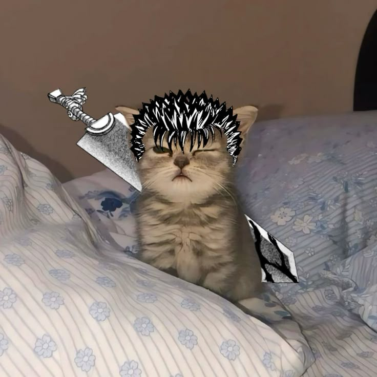
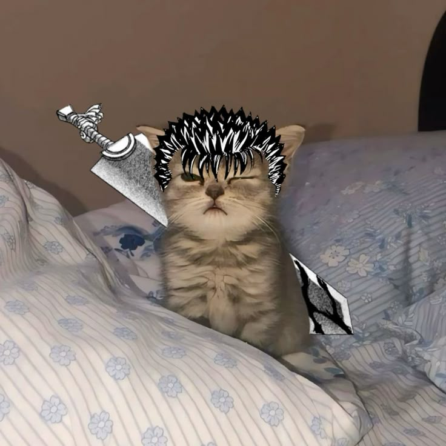
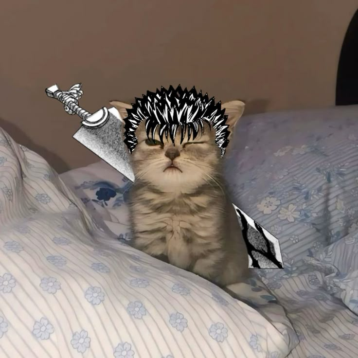

[URGENȚĂ CRITICĂ] S I S T E M Î N C H I D E R E
Accesul la sistem a fost restricționat de virusul **CAT\_LORD\_COOL**!
Protocol de decriptare activat: Decodificare necesară: [NA==] - CAT-UNIT.01
Timp rămas până la distrugerea datelor:
50
INTRODU CODUL DE DECRIPTOGRAFIE (4 cifre):
••••

CRITICAL ERROR...
 
